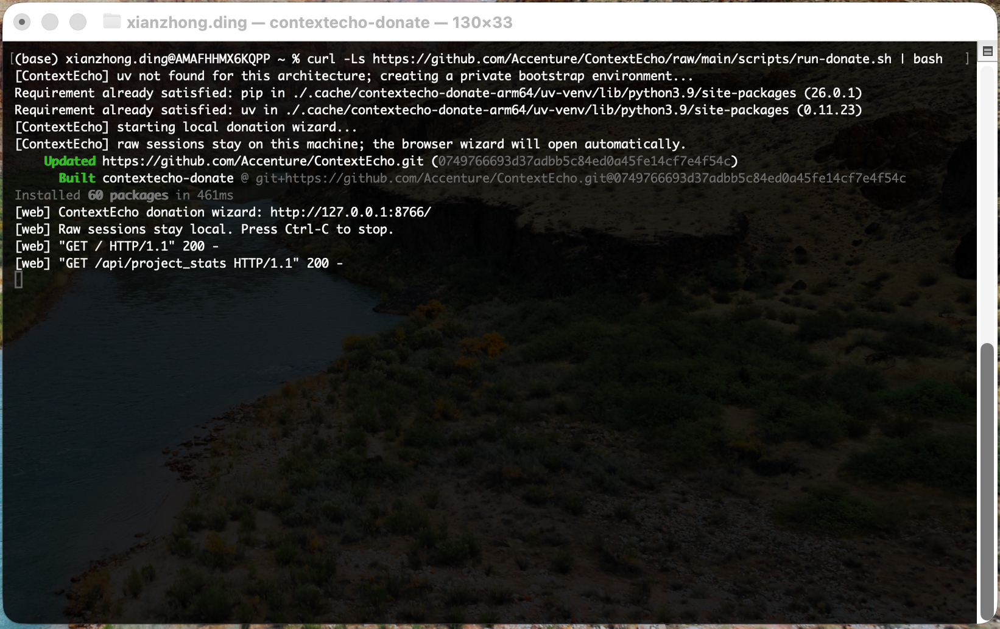

1. Run the command in Terminal
After copying the command from this page, paste it into Terminal and press Enter. The script prepares a private local environment and starts the donation wizard.
- Leave this Terminal window open while donating.
- When you see ContextEcho donation wizard: http://127.0.0.1:<port>/, the local wizard is running.
- Raw sessions stay local on this machine.